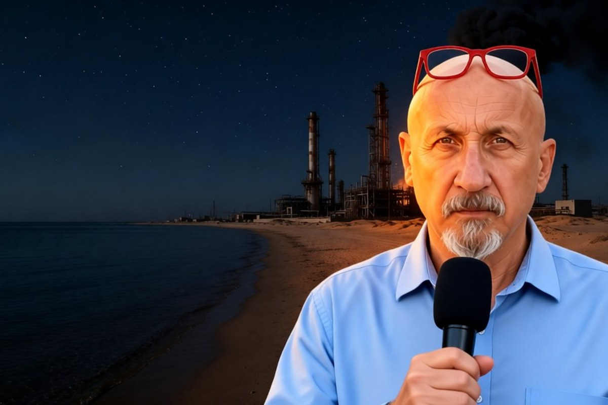

Geopolitica · 31 ottobre 2026
Colpito l'impianto dei carburanti nella più grande raffineria saudita

Le immagini dei satelliti su Ras Tanura mostrano che il missile degli Houthi non ha preso un serbatoio: ha centrato l'unità che ricava gasolio, benzina e carburante per aerei. La torcia dell'impianto si è spenta.
di Franco Zanghì
Il greggio saudita continua a partire. Quello che rischia di fermarsi è la parte che diventa gasolio, benzina e carburante per aerei. È la differenza che si legge nelle immagini satellitari della raffineria di Ras Tanura, sulla costa saudita del Golfo, dopo l'attacco rivendicato dagli Houthi.
I fatti
Martedì 27 ottobre il portavoce militare degli Houthi, Yahya Saree, ha annunciato che un missile balistico aveva colpito la raffineria di Ras Tanura. È la più grande del regno: lavora fino a 550 mila barili al giorno, e accanto si trova il terminal da cui parte gran parte del greggio saudita. Secondo Bloomberg i sauditi hanno spento un incendio vicino al terminal. Riad non ha confermato danni.
Che cosa mostrano i satelliti
Le immagini, pubblicate da The Maritime Executive, collocano il colpo dentro il complesso di raffinazione, su un impianto che secondo gli analisti è un'unità di cracking: quella che spezza il petrolio pesante e ne ricava i carburanti. Gli analisti che lavorano sulle fonti aperte notano un secondo segnale: la torcia, cioè la fiamma che brucia il gas in eccesso, si è spenta. Di solito vuol dire impianto fermo, o a ritmo ridotto. Né l'Aramco né il governo saudita lo hanno confermato.
Il greggio, invece, esce. Javier Blas, commentatore di Bloomberg, ha contato 9 superpetroliere in carico insieme a Ras Tanura e nel porto vicino, circa 18 milioni di barili, e calcola che l'Aramco abbia recuperato i livelli di esportazione precedenti alla guerra. Il punto debole, quindi, non è il petrolio grezzo: sono i prodotti raffinati, che sul mercato mondiale già scarseggiano.
Il contesto
Da inizio ottobre gli Houthi colpiscono il regno quasi ogni giorno. Giovedì hanno rivendicato un nuovo attacco a Ras Tanura, alla raffineria di Rabigh sul Mar Rosso e a un altro impianto dell'Aramco; Riad non ha confermato. Eppure lunedì il ministro della Difesa saudita, Khaled bin Salman, era andato a Teheran, per la prima volta da febbraio, proprio per abbassare la tensione.
Il Brent, il petrolio di riferimento per l'Europa, viaggia intorno ai 115 dollari al barile e nel mese di ottobre è salito di circa il 14 per cento. Ma quello che si paga alla pompa dipende dal gasolio e dalla benzina, non solo dal greggio: per fare male non serve fermare il petrolio, basta colpire il punto in cui il petrolio diventa carburante.
Due cose da seguire adesso. La prima: se l'Aramco dirà quanto resterà ferma la raffineria. La seconda: se gli attacchi continueranno dopo il viaggio di Khaled bin Salman a Teheran.
Fonti
- The Maritime Executive, «Strike Damage Confirmed at Giant Saudi Refinery Complex», 28 ottobre 2026
- Reuters, ripreso da Al-Monitor, 27 ottobre 2026 (rivendicazione di Yahya Saree, incendio contenuto secondo Bloomberg, nessuna conferma saudita)
- Agence France-Presse, ripresa da Connaissance des Énergies, 27 ottobre 2026 (attacchi quasi quotidiani da inizio ottobre, visita a Teheran di Khaled bin Salman)
- Reuters, ripresa da Business Standard, 30 ottobre 2026 (rivendicazioni del 29 ottobre su Ras Tanura, Rabigh e Abqaiq)
- Adnkronos, «Houthi: colpita la più grande raffineria dell'Arabia Saudita», 27 ottobre 2026
- Energy Update, «Satellite Images Show Damage to Major Saudi Refinery After Houthi Strike», ottobre 2026
Danni e fermo dell'impianto non sono confermati dall'Aramco né dal governo saudita, e l'identificazione dell'unità di cracking è l'interpretazione degli analisti sulle immagini satellitari. Il prezzo del Brent è quello di fine ottobre.